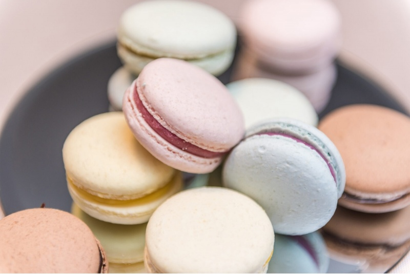

Онлайн мастер-класс «Приготовление макарунов»



Предлагаем для нашей команды необычный и уютный формат team building — online мастер-класс по приготовлению французских макарунов Premium 🍰
Это интерактивный формат, где участники не просто наблюдают, а вместе готовят десерт шаг за шагом под руководством кондитера. Такой формат отлично подходит для удалённых команд или гибридного коллектива.
Что входит:
- Online мастер-класс в прямом эфире
- Приготовление настоящих французских макарунов
- Пошаговое сопровождение от кондитера
- Совместное приготовление и общение в live формате
- Лёгкая и неформальная атмосфера для команды
Формат отлично подходит для:
- Team building мероприятий
- Корпоративных online-встреч
- Праздничных мероприятий для сотрудников
- Совместного досуга команды
Дополнительно можно организовать:
- Доставку ingredient box участникам
- Брендирование мероприятия
- Mini-конкурс на лучший результат
- Online голосование и выбор победителей
- Подарочные сертификаты для сотрудников
Такой формат помогает команде расслабиться, пообщаться вне рабочих задач и провести время вместе в более живой и дружеской атмосфере 😊
Стоимость:
Premium online обучение — 75 EUR за участника